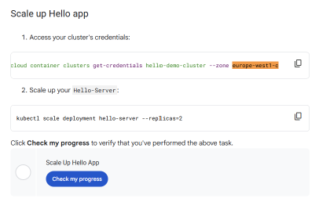

Gunakan panduan interaktif ini untuk menyelesaikan lab secara efisien. Masukkan parameter kredensial Anda untuk menyesuaikan seluruh skrip perintah di bawah secara otomatis.
Isi variabel dari panel kiri Qwiklabs Anda. Seluruh perintah di bawah akan otomatis terpasang dengan nilai ini secara presisi.
qwiklabs-gcp-04-xxxxxxx).
europe-west1-c). Region akan otomatis terisi berdasarkan Zone.
Gulir ke bawah pada panel instruksi Qwiklabs hingga Anda menemukan bagian Scale up Hello app. Pada kotak kode pertama, salin teks yang berada tepat setelah argumen --zone seperti yang disorot pada gambar di bawah:

Task 1 pada lab ini berisi materi acuan dan teori dasar mengenai pengelolaan workload GKE tanpa ada poin penilaian (*Check my progress*) secara eksplisit.
Skalakan workload Hello App dan amati bagaimana GKE membutuhkan node baru. Kemudian, migrasikan workload ke node pool baru yang lebih optimal secara biaya (binpacking).
Binpacking adalah teknik menempatkan container secara efisien ke dalam node (VM) seminimal mungkin. Daripada menggunakan banyak mesin kecil (seperti e2-medium) yang menyisakan ruang kosong memori tidak terpakai, seringkali lebih hemat biaya menggunakan satu mesin yang lebih besar (seperti e2-standard-2) yang dapat menampung seluruh workload secara padat.
Untuk menyelesaikannya, jalankan perintah berikut di Cloud Shell:
resize di atas akan memakan waktu sekitar 1-2 menit untuk menambahkan node baru.
Buat node pool baru dengan tipe mesin e2-standard-2, lalu lakukan cordon dan drain pada node lama agar Pods berpindah ke node pool baru dengan aman. Terakhir, hapus node pool lama.
Jalankan perintah berikut di Cloud Shell:
✅ Silakan klik tombol Check my progress pada Scale Up Hello App dan Create node pool di halaman Qwiklabs Anda.
Kelola cluster regional dan optimalkan biaya komunikasi antar-zona (inter-zonal traffic) dengan menempatkan Pod yang sering berkomunikasi (chatty pods) ke dalam zona yang sama menggunakan Pod Affinity.
Jalankan perintah berikut di Cloud Shell untuk membuat cluster baru dan mendefinisikan Pod dengan aturan Pod Anti-Affinity (memaksa Pod berada di zona yang berbeda):
✅ Silakan klik tombol Check my progress pada Check Pod Creation di halaman Qwiklabs Anda.
Perintah di bawah akan membuat pod-1 melakukan ping terus-menerus ke pod-2. JANGAN TEKAN CTRL+C setelah menjalankan ini. Biarkan terminal terus mencetak log ping.
default, lalu klik OK.vpc_flows, lalu klik Apply.
vpc_flows belum muncul segera di opsi All log names, harap tunggu sekitar 1 hingga 3 menit lalu refresh halaman console. Nama log ini akan muncul sendiri secara otomatis setelah traffic VPC Flow Logs mulai terakumulasi.
FlowLogsSample, klik Next.us_flow_logs, klik Create dataset, lalu klik Create sink.us_flow_logs -> klik tabel compute_googleapis_com_vpc_flows_xxx.compute_googleapis_com_vpc_flows_xxx, lalu pilih Query. Paste kode berikut tepat di antara kata SELECT dan FROM:jsonPayload.src_instance.zone AS src_zone, jsonPayload.src_instance.vm_name AS src_vm, jsonPayload.dest_instance.zone AS dest_zone, jsonPayload.dest_instance.vm_nameJika skor Anda masih tertahan di 95% atau ingin menghindari kerumitan kueri manual di BigQuery UI, jalankan skrip otomatis berikut di Cloud Shell untuk mengeksekusi ping & kueri BigQuery secara presisi:
vpc_flows yang dihasilkan oleh Sink BigQuery, dan mengeksekusi kueri SQL yang disyaratkan oleh Qwiklabs secara mutlak!
Setelah Anda menyelesaikan kueri BigQuery di atas, kembali ke Cloud Shell. Tekan Ctrl + C untuk menghentikan proses ping, lalu jalankan perintah berikut untuk mengubah aturan menjadi Pod Affinity (memaksa Pod berada di zona yang sama agar gratis biaya *egress*):
✅ Silakan klik tombol Check my progress pada Simulate Traffic di halaman Qwiklabs Anda.
Pelajari lebih lanjut mengenai teknologi yang digunakan dalam lab ini:
Jika menemukan kendala eksekusi kode atau perubahan urutan tugas pada portal Qwiklabs, sampaikan laporan Anda melalui form di bawah: